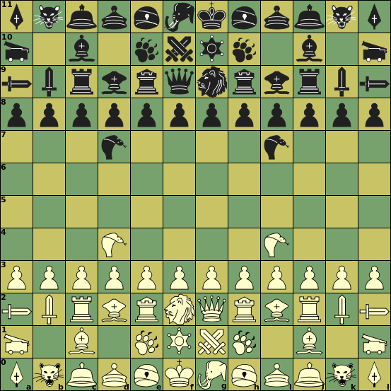
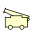
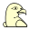
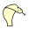

Sliding capture or non-capture,
can be blocked on any square along the ray


Chu Shogi was already known in the year 1250, and has been the dominant form of Chess in Japan for many centuries. In recent time, after the invention of piece drops, it was overtaken in popularity by modern Shogi. It is still widely played in Japan, though.
|  |
Initial setupf0, g11: King |
Click on a piece below to see its moves
|
Sliding capture or non-capture, |
||||||||||
|
|
Unblockable leap (capture or non-capture) | |||||||||
|  | |
Captured while passing through the square to another destination | |||||||||
|  | |
||||||||||
|
|
||||||||||
|  | |
|
|||||||||
|
|
||||||||||
:
:
:
:
| sym | Piece name | ID | value | Moves (Betza notation) | Remarks |
|
King | K | - | K | |
| Lion | N | KADN(cK-aK)(K-bK) | Can move twice per turn (as King) | ||
|
Queen | Q | RB or Q | ||
| Dragon(-King) | D | RF | Promotes to Eagle | ||
| (Dragon-)Horse | H | BW | Promotes to Unicorn | ||
|
Rook | R | R | Promotes to Dragon | |
|
Bishop | B | B | Promotes to Horse | |
| Vertical Mover | V | vRsW | Promotes to Narrow Queen | ||
| Side Mover | S | sRvW | Promotes to Sleeping Queen | ||
| Canon | A | vR | Promotes to Whale | ||
|
Lance | L | fR | Promotes to White Horse | |
| Kylin | O | FD | Promotes to Lion | ||
|
Phoenix | X | WA | Promotes to Queen | |
| Elephant | E | FsfW | Promotes to a second King | ||
| Blind Tiger | T | FsbW | Promotes to Flying Stag | ||
|
Gold | G | WfF | Promotes to Rook | |
| Silver | S | FfW | promotes to Vertical Mover | ||
| Copper | C | fFvW | promotes to Side Mover | ||
| Ferocious Leopard | F | FvW | promotes to Bishop | ||
| Cobra | I | vW | promotes to Elephant | ||
|
Pawn | P | fW | promotes to Gold | |
| Promoted pieces (not initially present) | |||||
| Eagle | +D | RbBf(FA(cF-F)(mcF-bF)) | Moves as Q, except for linear double-step 'stinging' moves diagonally forward | ||
| Unicorn | +H | BsbRf(WD(cW-W)(mcW-bW)) | (aka Horned Falcon) Moves as Q, except for linear double-step 'stinging' forward | ||
| Narrow Queen | +V | BvR | aka Flying Ox | ||
| Sleeping Queen | +M | BsR | aka Free Boar | ||
| Flying Stag | +T | FvRsW | |||
|
White Horse | +L | vRfB | ||
| Whale | +A | fbRbB | |||
Some pieces can make two moves per turn. That means they can also capture two pieces per turn, one on the square they move to (as normal), and one 'en passant' on the transit square. They can also capture on the transit square, and move on to an empty square ('hit and run'), or capture and move back to where they came from ('shooting' the piece from a distance, as it were). Of course they can also capture a single piece in the normal Chess manner. In that case the transit square is immaterial.
The Lion can make such double moves as two King steps, i.e. in all directions, and arbitrarily changing direction between them. The Unicorn and the Eagle can only make double moves in one or two directions respectively. They can not arbitrarily change direction, but only reverse it (or not), so they do stay on the ray in that direction. But that way they can still make double, hit-and-run, shooting or normal captures. All these pieces can also jump over the transit square, i.e. reach the distant two-step destination in a single jump. Finally they can also just make a step to an adjacent square, refraining from taking a second step.
There are rules to make Lion trading very difficult, in order to keep the Lions in play. Basically they specify that two Lions cannot be captured in consecutive half-moves. When the first capture is Lion x Lion from a distance, it is forbidden to play it if recapture of the capturing Lion is possible. When another piece captures a Lion, it is just the other way around: then the 'counterstrike' by a non-Lion against the Lion is forbidden. One possibility left open is thus when you capture an adjacent Lion. But then you would in general be foolish to allow recapture, as you could take the Lion hit-and-run fashion, fleeing to a save square. An exception to the rule is when a valuable opponent piece (i.e. not a Pawn or Go Between) forms a 'bridge' between the Lions; you may then capture that piece in the first leg of the double-move, and then take the opponent Lion with the second leg. Then the opponent can recapture, but he will have lost a valuable piece.
This game has to be played with the option Show Target Squares on! This option will cause marking of the target squares of any piece you select or grab, by the engine (with legality testing off) or by XBoard (legality testing on). Moving to a square marked in cyan will be interpreted not as the final destination, but as the transit square after the first step of a multi-leg move. XBoard will then highlight the possible destination squares of the second leg from there. Should you want to end on the cyan square, you click it again, (it will be no longer marked in cyan), and XBoard will terminate the move after the first leg. You can also move back to the starting square, to 'shoot' the opponent piece from nearby.
With Detour Underpromotion on, XBoard will assume by default that every piece that enters the zone promotes. Should you want to defer in this mode, you should use a click-click move, and when you make the click on the promotion square, move the mouse down before releasing the button. If you move enough the piece on the promotion square will change back to the unpromoted form, and then you can release. With Detour Underpromotion off, you will automatically get a promotion popup that asks whether you want to promote or defer.
Except that there are also Kings, Queens, Rooks and Bishops, not much is the same.
Piece with no sliding forward moves are hard to promote, but promotion of forward sliders is practically unavoidable.
You can have two Kings by promoting the Elephant, in which case the opponent would have to capture both in order to win.